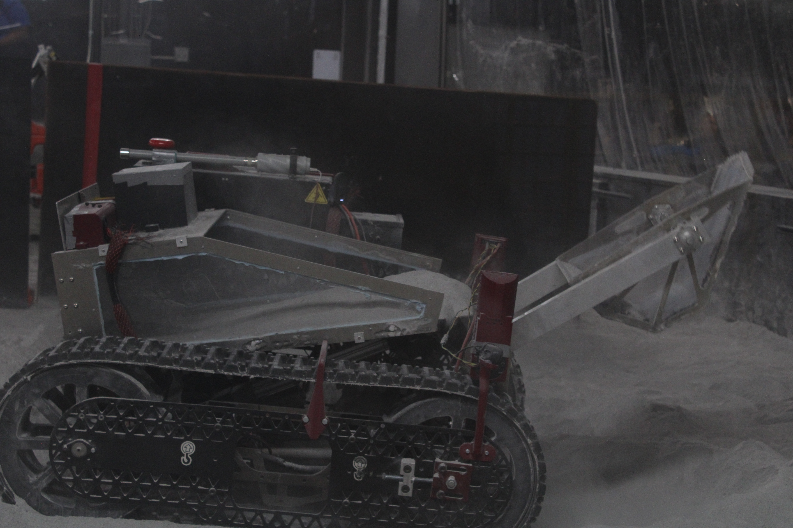
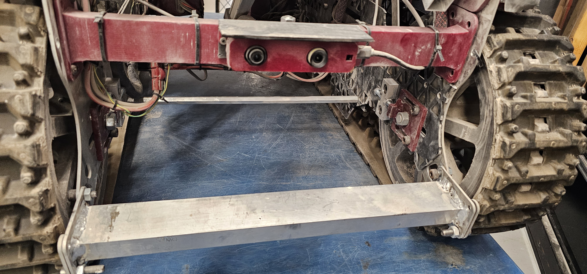
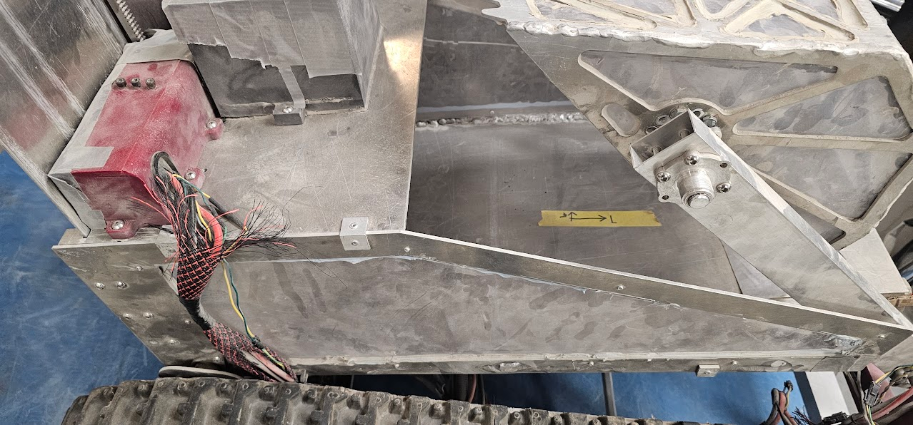
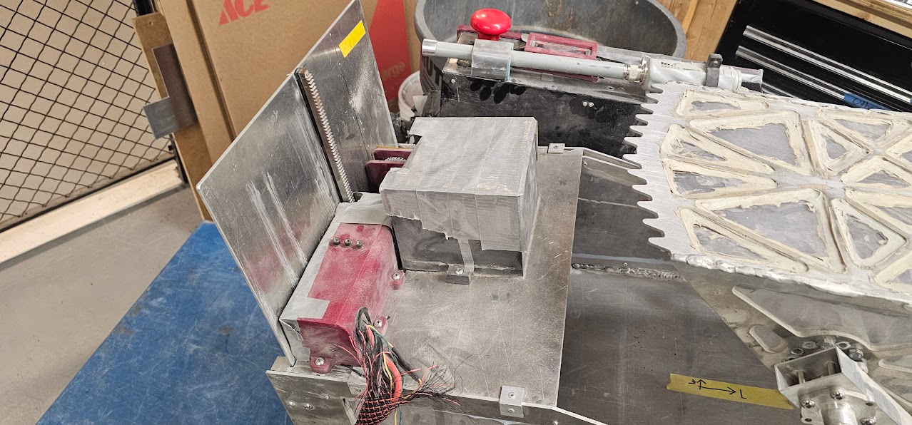

AZRAEL was Astrobotics' entry to the 2026 Lunabotics challenge.
We placed 10th overall out of 47 teams and 8th in autonomy.
AZRAEL is special to me because it is the first time our team got
significant points in Autonomy. This made me proud since it built on many
developments I made as software lead during the development of REAPER.
Proof of Life Video
For AZRAEL I served as the Astrobotics team lead and was responsible for systems engineering and integration. I was additionally on the software team and responsible for much of the controls code.
Specifically, I was responsible for:
AZRAEL used ROS2(primarily C++ but some Python). Azrael was controlled over a wifi link remotely using the ROS2 DDS. It was both teleoperated and Autonomous. With autonomy being used to dig, and deposit, with driving autonomy not being reliable enough for us to be comfortable competing with it. All motors were controlled via CAN interfaces, with a combination of on-motor PID controllers and robot-controller side PID controllers. Our Zed-m camera was used to detect obstacles and to provided a pose estimate via visual intertial odometry.

The above image shows the Front of AZRAEL, Notice the welds on the hard-stop. This is one of the areas that made us learn welding directly over a waterjetted cut and frequently introduce contamination resulting from the abrasive. Also Pictured is our Zed-m from sterolabs which works quite well as a depth-camera for our system.

The above image shows yet more welds affected by contamination. It also doesn't help that I am not the best aluminum welder out there. Additionally note the large antenna on the robot, this allowed for us to maintain good comms at all times in the arena. The communication system was repurposed from ANUBIS following its good performance during testing.

During competition runs the lunar regolith affected the positioning of the rack and pinon system much more than during testing. During testing in our sand pit there was minimial slippage, regolith is however much stickier than sand and caused more slippage. This caused our motor's integrated encoder to report incorrect position values for the door. I came up with the solution of adding an "allignment indicator"(yellow tape) to let us use our camera's to ensure that the door was actually where we thought it was. This solution allowed us to continue on when this would otherwise be an issue that could not be solved during competition.